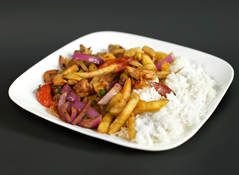

Saltado de pollo

Description
A delectable collection of sautéed chicken, bell pepper, onion, tomato and fries served over rice!
Ingredients
- 1 pound of chicken, boneless, sliced or diced
- 1 onion, sliced
- 1 red bell pepper, cut into strips
- 1 medium tomato, sliced or diced
- 8-10 fries, fried once (still soft) instead of twice
- 1 cup of cooked rice
- 1 teaspoon of paprika
- 1 teaspoon of cumin
- 1/2 teaspoon of salt
- 1/4 teaspoon of pepper
- 1 tablespoon of aji panca paste
- 1 sprig of cilantro, washed
- 1 tablespoon of cooking oil, preferably corn oil
Steps
- Light up a power burner on medium high heat, and place a wok on it.
- Add the oil into the wok and sautée the onion slices for 4-5 minutes.
- Add the red bell pepper strips and chicken pieces. Continue sautéeing until strips are tender and chicken is golden brown, another 4-5 minutes.
- Add the aji panca and all the spices; stir and mix well.
- Add the tomato pieces, stirring. Cook for another 10 minutes or until liquid is well reduced.
- Add the fries, cooking for 4-5 more minutes.
- Serve on a bed of rice on a shallow plate, pouring some of the juice from the wok on it.
- Let the dish cool for 3-4 minutes, pull the cilantro apart by hand and garnish it over the food, and serve the saltado forth.
Back